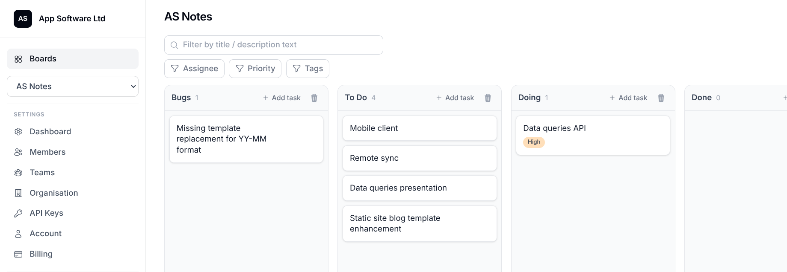
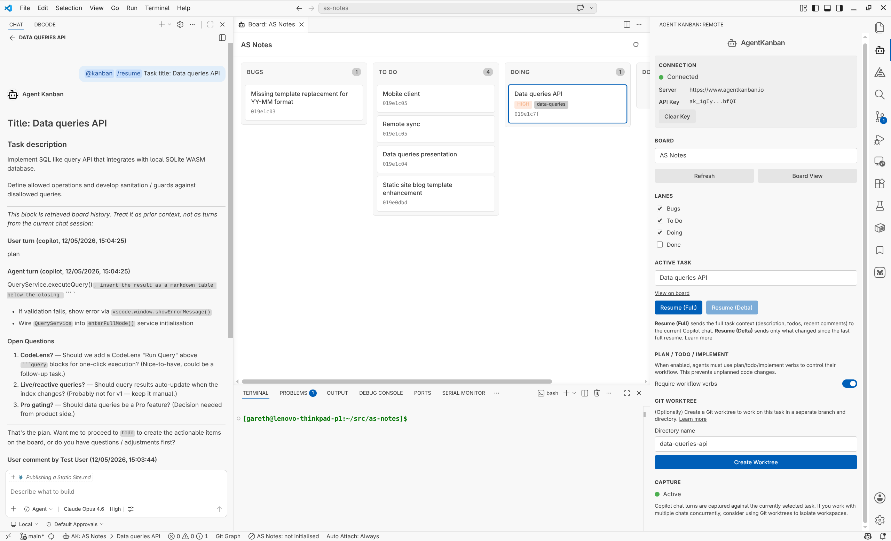

Introducing Agent Kanban
AI coding agents work inside chat sessions. A chat session is good at local reasoning - you give it a task, it works through the problem, it produces code. But the session itself is ephemeral. When you close the tab, clear the context, or start a new conversation, the reasoning and decisions from that session are gone.
For small tasks this is fine. For anything that spans multiple sessions, involves more than one person, or needs to be revisited later, it breaks down quickly.
Common failure modes:
- Context is trapped inside a single chat tab. The next session starts cold.
- Resuming work requires retelling the problem from scratch, or dragging forward a bloated transcript that's mostly noise.
- Decisions made during implementation are recorded only in chat history - not against the task they relate to.
- Team members can't pick up where someone else left off without a manual handover.
- The agent operates with a partial view of the project because wider state lives somewhere else entirely.
These problems compound. A feature that takes three sessions to implement means three separate chat contexts, none of which are connected. A task that pauses for a week and gets picked up again means rebuilding all the reasoning that already happened. A team working with AI agents means everyone has their own isolated context silos.
What Agent Kanban is
Agent Kanban is a task and context management tool for agentic software development. It connects project management (kanban boards, lanes, tasks, todos) with AI agent context persistence and curation.
The core idea: the task on the board is not just a ticket - it's also where agent conversation history, decisions, steering, and attachments live. Context stays with the work it belongs to.
It consists of two parts:
-
A web application at agentkanban.io - real-time collaborative kanban boards with rich task editing, comments, todos, file attachments, shared agent instructions, board memory, and technical documents.
-
A VS Code extension - connects your IDE to the board, binds GitHub Copilot chat sessions to the active task, captures conversation turns automatically, and provides resume/context injection for new sessions. MCP tools are auto-configured so the agent can read and update tasks, todos, and board memory directly.
AgentKanban remote task board:

AgenKanban VS Code Extension:

How it works
Select a task, start working
In VS Code, you connect to your board with an API key, select a task, and start a GitHub Copilot chat. The extension captures each conversation turn - user prompts and agent responses - against that task on the remote board. No manual copy-paste.
Resume without rebuilding context
When you come back to a task (next day, next week, different machine), you resume with task-specific context already injected into the new chat session. The agent picks up where things left off without you needing to re-explain the problem or paste in previous conversations.
The resume payload includes: task description, captured turns, comments, todos, and technical notes. You control what's included.
Curate what matters
Not every turn is useful long-term. The Turns tab on each task gives you curation tools:
- Pin turns that contain key decisions or architecture choices - these survive retention limits.
- Exclude turns that are noise (debug runs, test prompts) - they're hidden from future context injection but kept for audit.
- Fork a conversation branch into a new task while keeping the original intact.
- Split a task when the conversation has shifted to different work.
- Delete tail noise permanently.
Share context across people and sessions
Because context is stored on the task (not in a private chat tab), it's inherently shareable:
- Another developer can pick up a task and inherit the earlier reasoning.
- A task paused for weeks can be resumed with implementation context still attached.
- Product decisions and technical choices stay on the task instead of being scattered across chat histories.
The workflow
Agent Kanban encourages a structured workflow for non-trivial tasks:
Plan - Write task requirements on the board. The agent is instructed to ask clarification questions before proceeding, resolving ambiguity upfront rather than guessing during implementation.
TODO - The agent breaks the agreed plan into concrete TODO items on the task. These are visible and editable by both humans and the agent.
Implement - The agent works through the TODOs, keeping them updated as progress is made. If you need to pause and resume later, the state is on the board.
This isn't enforced rigidly - you can use Agent Kanban however fits your workflow. But for larger tasks, the structure pays off.
Board-level configuration
Shared agent instructions (AGENTS.md)
Write project-specific instructions in the board settings. These are injected into the AGENTS.md file in every connected workspace automatically. Define your framework, testing conventions, coding standards, or repo structure once - every team member's agent receives them without manual sync.
Board memory and technical documents
Store durable project context (architecture decisions, deployment notes, conventions) in the board's Memory and Technical tabs. The VS Code extension syncs these as local read-only files so agents can reference them directly without API calls. Agents can also update them via MCP when they discover information worth preserving.
Integration surface
Agent Kanban exposes an external REST API and MCP server, both secured with scoped API keys:
- REST API - CRUD operations on boards, tasks, todos, comments, assets. Useful for CI/CD integration, custom tooling, or automation.
- MCP tools - Auto-configured by the VS Code extension. Agents can read task context, update todos, write to board memory, and download assets without leaving the conversation.
- Webhooks - HMAC-SHA256 signed payloads for reacting to board events in external systems.
What it is not
Agent Kanban is not a replacement for your agent harness. GitHub Copilot (and other harnesses in development) still does the actual coding work. Agent Kanban manages the context around that work - organising it, persisting it, curating it, and making it resumable.
It's also not an opinionated framework that takes over your workflow. You can use it for a single task and ignore it for everything else. The extension only activates when you've selected a board and task.
Technical details
- Real-time multiplayer editing via Yjs CRDTs over WebSocket
- Rich text task editing with Tiptap (ProseMirror)
- Authentication: email/password, GitHub OAuth, Google OAuth, TOTP 2FA, passkeys (WebAuthn)
- Deterministic turn capture from IDE extensions (currently GitHub Copilot; architecture prepared for Claude Code and Codex)
- Git worktree support for working on multiple tasks in parallel with isolated branches
- Free tier available; Pro tier for teams and higher limits
Get started
- Register at agentkanban.io
- Create a board and add tasks
- Install the VS Code extension from VS Code Marketplace or Open VSX
- Create an API key, paste it into the extension sidebar
- Select a board and task, start a Copilot chat
Documentation: docs.agentkanban.io